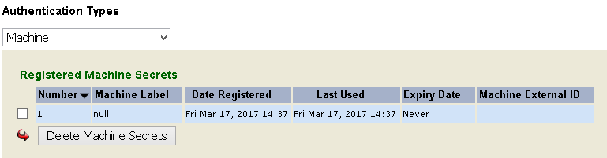

|
IdentityGuard Server 12.0 Administration Guide |
|
IdentityGuard Server 12.0 Administration Guide |
You can view some of the machine secret information through the Administration interface or the Master user shell command line. The rest is stored in encrypted format in the repository. Client applications can access it using the Administration API.
If you use Self-Service Module, you can configure it to allow users to view and, optionally, delete machine secrets. User's can label their machine secrets for easy identification (for example, My Work Computer).
To view machine secrets in the Administration interface
1. Log in to the Entrust IdentityGuard Administration interface as the administrator.
 On the
Windows computer where Entrust IdentityGuard is installed
On the
Windows computer where Entrust IdentityGuard is installed
2. Click User Accounts on the menu bar.
3. Find a specific user in one of two ways:
● use the Go To Account tab (see To search for information about one user)
● use the Find Accounts tab (see To search for information about one or more users)
The View Account page appears.
4. Under Authentication Types on the user’s Account Information pane, click Machine.
The user’s registered machine secrets appear.

The Machine External ID is populated by an external application if your Entrust IdentityGuard installation uses an external risk engine to provide additional device information. The value is this column associates the machine as it is known in Entrust IdentityGuard with the same machine as it is known in the external risk engine. For more information, see Using external risk engine data for RBA authentication.